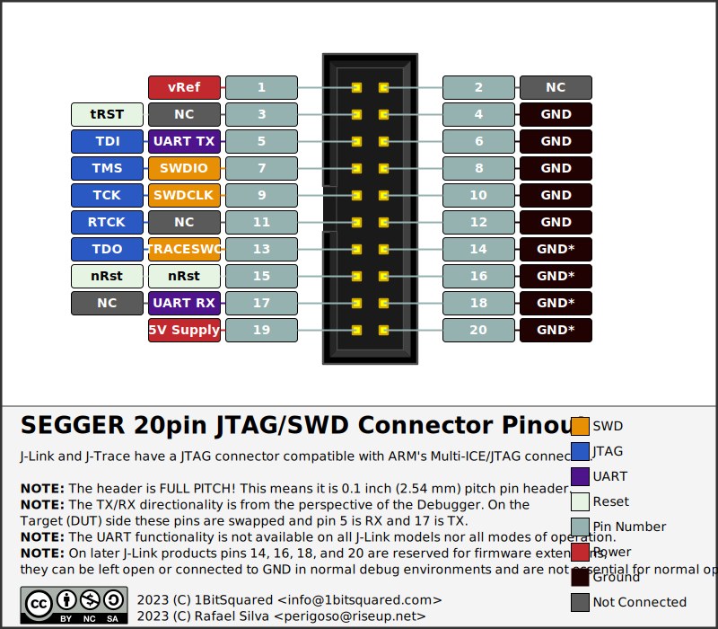

Pinout Glossary¶
In the world of JTAG/SWD debuggers there is a plethora of different connectors. Some are more common than others. This page is trying to collect some of the more common ones in one place. The goal is to make it bit easier to find out what signals should be connected where.
Black Magic Debug Unified Connector (BMDU)¶
This connector is backwards compatible with the ubiquitous ARM Cortex 10pin Debug connector. We have introduced this connector on the Black Magic Probe V2.3 hardware. To add the UART connections you will have to adjust the jumpers on the back of the board:
Cut the default RX jumpers with a sharp hobby knife. (These are the middle pad and the pad closest to the board edge.) You might want to test them using the continuity function on a multimeter to make sure they’re disconnected.
Solder together the middle RX pad and the RX pad farthest from the board edge.
Solder together the TX jumpers. (They default to unconnected.)
(TODO: Add Black Magic Probe V2.3 documentation)
A drawback of configuring the BMDU jumpers this way is that connecting to a standard SWD connector might render the UART pins on the PicoBlade connector unusable while the SWD connector is attached. This is because a standard SWD connector will probably short the UART RX pin to GND, and might short the UART TX pin to GND. You can revert the solder jumpers to their default configuration if this is a problem.
ARM Cortex Debug Connectors¶
There are several main connectors that are standard/very common on boards that use ARM Cortex Microcontrollers.
ARM Cortex 10pin Debug Connector¶

This is the connector provided on the Black Magic Probe debugger and is the most common JTAG/SWD connector. Keep in mind that since Black Magic Probe V2.3 we provide jumpers on the back side of the PCB allowing the user to change the connector to the Black Magic Debug Unified Connector (BMDU).
ARM Cortex 20pin Debug & Trace Connector¶
This connector is an expansion of the ARM Cortex 10pin debug connector and adds the parallel trace interface (Embedded Trace Macrocell). This connector can be directly used with the ORBTrace Mini.
If your target has the 20pin connector and you would like to connect the Black Magic Probe to that target. You can use a 10 to 20 pin ribbon cable that allows the connection of one half of the pins to the Black Magic Probe. (1BitSquared is offering this cable in their store).
ARM JTAG Connector¶
This connector is the old and trusty ARM JTAG connector. It is a bigger pitch (0.1 inch / 2.57 mm). You can find this connector on some older devices and development boards.
STMicroelectronics STDC14¶
This is a custom connector that STMicroelectronics invented. It is backwards compatible with the ARM Cortex 10Pin Debug Connector, so one can plug a 14pin ribbon cable into a 10pin debug connector if the connector is not fully shrouded. The ribbon cable will then overhang the connector by two pins on each side. If your target has this 14pin connector you can connect the Black Magic Probe by connecting a 14pin ribbon cable to the Black Magic Probe (1BitSquared is offering these cables in their store).
SEGGER 20pin Debug Connector¶

This is a custom connector used on SEGGER J-Link and J-Trace debug probes, designed to be loosely compatible with the ARM JTAG Connector.